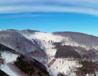

Moravskoslezské Beskydy ⛰️
Úvod

Nejvyšším vrcholem je Lysá hora, jejíž výška činí 1324 m n. m. Dalšími vysokými nebo známými horami jsou Smrk, Kněhyně, Travný, Radhošť a Javorový. Celkem je v Beskydech 32 tisícovek.
Hlavní hřebeny Moravskoslezských Beskyd jsou odděleny velmi hlubokými údolími a díky tomu má řada hor velmi vysokou prominenci (převýšení od sedla). Hned 4 vrcholy mají prominenci kolem 500 m a víc (Lysá hora, Smrk, Travný a Kněhyně) a dalších 18 vrcholů má prominenci nad 100 m (tisícovky Ropice, Velký Polom, Slavíč, Ostrý, Malý Polom a Radhošť, z netisícovek např. Velký Javorník nebo Kozubová).
Podnebí
- Srážky
- Spadne zde velké množství srážek. Roční úhrn srážek se drží nad 750 mm. Lysá hora s ročním průměrem 1459,2 mm/rok (rekord 2254,7 mm) patří k nejdeštivějším místům v ČR.
- Teplota
- Průměrná teplota je na Lysé hoře v červenci 11,8 °C (v údolích 18 °C) a v lednu -6,1 °C (v údolích -3 °C). Často se zde objevují zimní teplotní inverze, způsobené těžším chladným vzduchem v údolích a lehčím teplejším vzduchem na hřebenech.
- Sněhové podmínky
- Podle údajů meteorologické stanice na Lysé hoře je průměrná výška maximální sněhové pokrývky 196 cm. Nejvíce sněhu bylo na Lysé hoře v zimě 1910/11, a to 491 cm.
Ministránku připravil Jakub Vorel